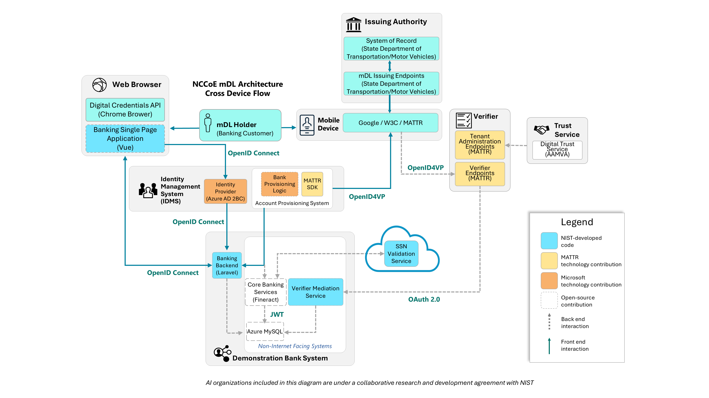
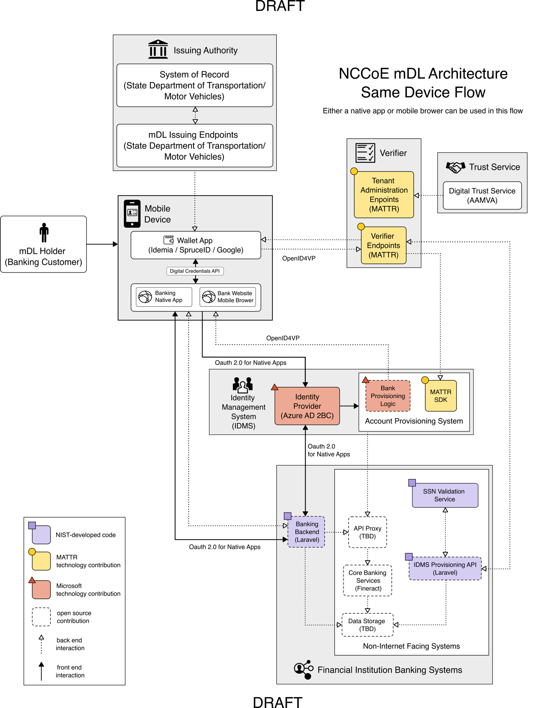

Financial Use Case Reference Architecture
The figures below are a graphical representation of the representative architecture we are implementing as part of the NCCoE Lab demonstration. This architecture is based on criteria that resulted from discussions with our industry collaborators and is a more detailed view than what we previously published with our notional architecture. These figures show the general interactions between key components while also highlighting some of the important protocols implemented as part of the architecture. It also captures the commercially available technology, internally developed systems, and open-source platforms we used to implement the architecture. We encourage the reader to read our Digital Identities: Getting to Know the Verifiable Digital Credential Ecosystem blog post to learn more about the components referenced in the architecture.
The figures below depict two scenarios for the demonstration - same device and cross device flows. These flows are defined in the Open ID for Verifiable Presentations (OpenID4VP) specification as:
Cross device - A flow where the End-User presents a Credential to a Verifier interacting with the End-User on a different device as the device the Wallet resides on.
Same device - A flow where the End-User presents a Credential to a Verifier interacting with the End-User on the same device that the device the Wallet resides on.
Note that the same device architecture depicted below is in Draft form. The cross device architecture has been demonstrated and completed. To see a video example of what the cross-device flow looks like from the customer’s perspective, please review our demonstration videos.
Architecture Diagrams
Each flow makes the following assumptions:
A banking customer navigates to a banking service and engages in an action that requires them to present their mDL. For the NCCoE project, the customer will be required to present their mDL for identity proofing when opening a new financial account and for step-up verification when a user conducts a high-risk transaction.
The customer has an mDL provisioned to the digital wallet on their mobile device and chooses to present it to the bank.
The bank has verifier capabilities to request and cryptographically verify the mDL.
The bank can create and manage the customer’s account via an identity management system.
Figure 1 Cross Device Flow
{kind=link}

Figure 2 Draft Same Device Flow
{kind=link}

Architecture Components
For an overview of the general architecture components, please review our Digital Identities: Getting to Know the Verifiable Digital Credential Ecosystem blog post.
To facilitate the demonstration needed for this project, the NCCoE is building a fictitious bank called the NCCoE Bank. This service is represented in the architecture as the financial institution banking systems. These represent a minimal set of banking capabilities that can be adapted to operational systems. These capabilities include:
Banking Backend - A system that implements a scoped set of banking functions, provides an API to facilitate front end interactions, and a client to the core banking services.
Core Banking Services - Refer to the systems that facilitate vital bank business. For our demonstration this will including processing transactions and updating accounts. [4].
Verifier Mediation Service - A system that implements interfaces that interact with the IDMS to facilitate account opening and digital enrollment phases.
API Proxy - A reverse proxy routing requests from clients to services [5].
SSN Validation Service - A system that emulates the functionality of the Electronic Consent Based SSN Verification (eCBSV) Service [6] designed to validate social security numbers.
Data Storage - The core banking repository for data retention criteria and associated transactional data.
Standards Included in this Architecture
This architecture makes use of several standards in the mDL ecosystem. To learn more about the standards that encompass the VDC ecosystem, we encourage the reader to visit our upcoming deep dive in our blog series [8].
OpenID for Verifiable Presentations (OpenID4VP) - OpenID4VP [2] is a protocol described by the OpenID Foundation that enables the presentation of verifiable digital credentials (in this case mobile driver’s licenses) and is built upon multiple standardized protocols and data formats.
ISO 18013-5 - An international standard that defines the specifications for mDLs and their data exchange with electronic devices. It defines the technical structure and data structure of mDLs, including how personal data should be encoded and stored securely.
ISO 18013-7 - An international standard that defines the specifications for mDLs licenses and their data exchange during online presentation.
Digital Credentials API - In both flows, our demonstration banking system may leverage a modern web browser which implements the Digital Credential API [7]. This draft community group report describes how relying parties, such as financial institutions, can request the presentation of digital credentials from wallet applications. In our scenarios, this API will facilitate identity verification during the account application, digital enrollment, and re-verification.
WebAuthN - is a web standard developed by the World Wide Web Consortium (W3C) and the FIDO Alliance (Fast Identity Online). It allows websites and applications to implement phishing resistant authentication using passkeys and/or external security keys. This project will demonstrating a user creating and authenticating with a passkey.
OAuth 2.0 - OAuth 2.0 is an authorization standard that may be used to support access control objectives by API services. The standard defines a set of technical specifications for the generation, protection, and delivery of authorization tokens (JSON Web Tokens or JWT) to different connected endpoints (e.g., servers). The authorization (or access token) is used to define what actions an endpoint may take relative to a specific service. For API protection, these tokens are typically issued to consumers of the service, allowing them to make requests to the API service and allowing the API service to confirm that such requests are coming from a valid and approved source.
OpenID Connect [9] - OpenID Connect 1.0 (OIDC) is a specification that is built upon the Internet Engineering Task Force OAuth2 Authorization Framework [10] which enables application and website developers to launch sign-in flows and receive verifiable assertions about users across Web-based, mobile, and JavaScript clients.
We’re currently working with our technology partners to create a customized OIDC profile that will describe how a financial institution can leverage OIDC with an identity management system to support the demonstration scenarios. In this future profile, we will use OIDC to invoke an authentication event from a Passkey or an identity verification event via a mobile driver’s license. Further, in the same-device flow, the authentication events will adhere to IETF’s Best Current Practice [11] when using a native banking applications.